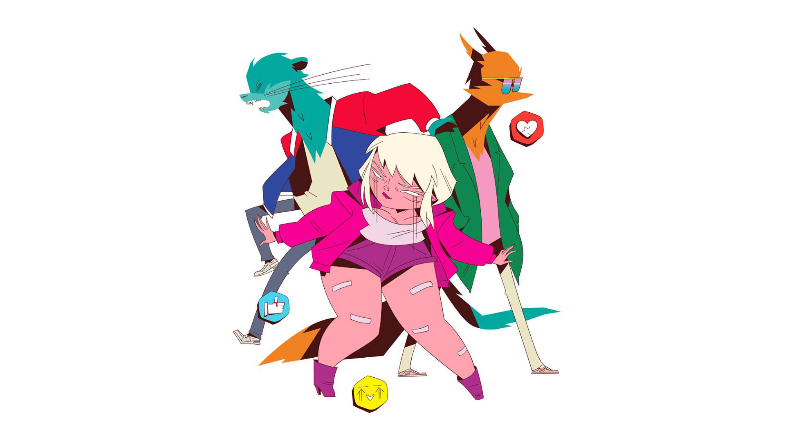
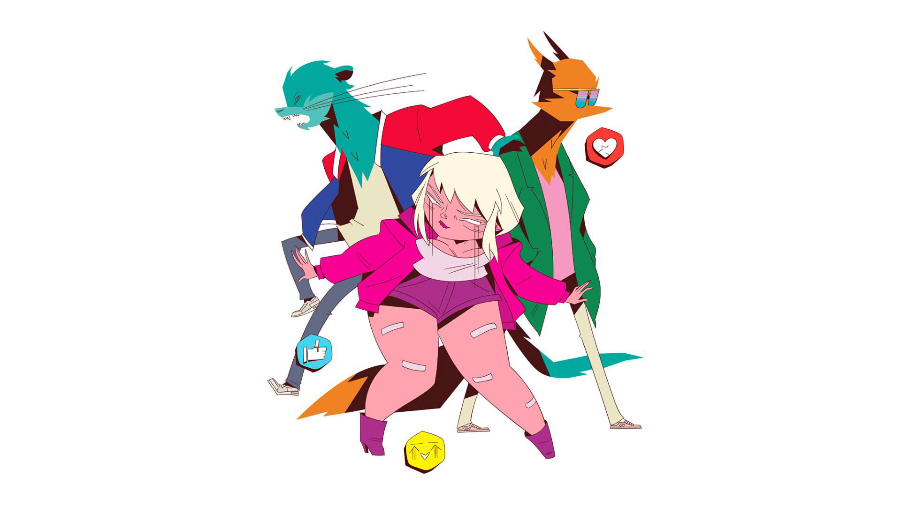

Formation and Debut Studio Album
The voices of Goldie Foxx and Dyna Mink stated that they had originally written a song for a British girl band that was dropped from their label and were put in contact with Cherry's vocalist, who wrote the lyrics and performed the song with them. The members claim that most of their correspondence is through email, although their song "Who Is in Your Heart Now?" was written when they first had a face to face meeting. The identities of the band members are unknown, and all interaction with fans is conducted via their fictional counterparts.
They premiered in 2011 with the single "Ode to the Bouncer", and gained popularity through their music video on YouTube. The single was successful in the Netherlands, Finland, and Denmark. After releasing other singles "Eros and Apollo", "All Men Are Pigs", and "Jenny" through 2012 and 2013, they released their self-titled debut album in 2013, and followed up in 2014 with the new single "Grande Finale". Studio Killers also announced that they were going to start having live shows, starting with the 2014 Ruisrock festival in Finland, followed by Ilosaarirock.
In 2014 the band performed live at Ruisrock and Ilosaarirock festivals. The real-life counterparts of the characters Goldie Foxx and Dyna Mink appeared on stage wearing masks, and the character Cherry was present in the form of screen projection.
 

Hiatus and Comeback
In 2015, after a year long absence, Studio Killers made a brief comeback and released the music video for "Jenny" on December 24, as a Christmas gift to their fans. The band went on a two year long hiatus, up until February 15, 2018, a YouTube video titled "Fresh Start: Studio Killers ARE BACK!" was posted onto their official YouTube channel.
Later on in 2018, they released two singles; "Party Like It's Your Birthday" on June 8, and "Dirty Car" on November 30, with music videos accompanying each song respectively.
On August 31, 2019, the group announced their intent to create an animated series and plan to launch a kickstarter to create a pitch pilot.